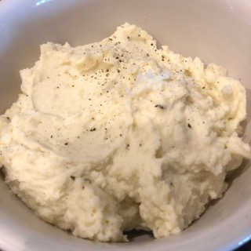

How to make Mashed Spuds

Ingredients
- 2 pounds baking potatoes, peeled and quartered
- 2 tablespoons butter
- 1 cup milk
- salt and pepper to taste
Steps
- Bring a pot of salted water to a boil. Add potatoes and cook until tender but still firm, about 15 minutes;
drain.
- In a small saucepan heat butter and milk over low heat until butter is melted. Using a potato masher or
electric beater, slowly blend milk mixture into potatoes until smooth and creamy. Season with salt and
pepper to taste.
Return to home page